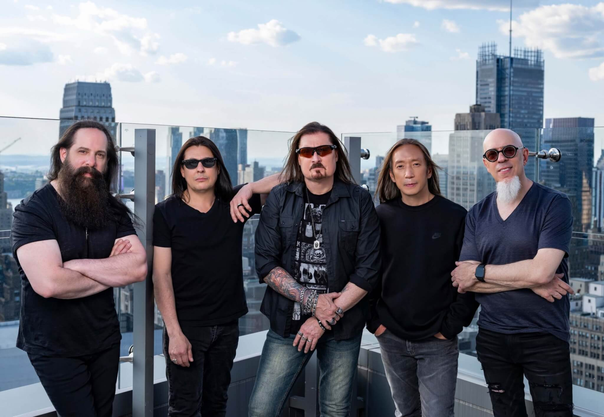

Dream Theater es una banda estadounidense de metal progresivo, formada en 1985 con el nombre de Majesty por Mike Portnoy, John Myung y John Petrucci durante su estadía en el Berklee College of Music de Massachusetts. Poco a poco, fueron dejando sus estudios para dedicar más atención a la banda que terminaría llamándose Dream Theater. A pesar de que se sucedieron algunos cambios en la formación inicial, los tres miembros originales permanecieron junto a James LaBrie y Jordan Rudess hasta el 8 de septiembre de 2010, cuando Portnoy abandonó el grupo. En octubre de ese mismo año, la banda organizó unas audiciones para el reemplazo del puesto de batería. El 29 de abril de 2011 se reveló que Mike Mangini sería el nuevo baterista permanente del grupo.
La banda es conocida por el virtuosismo técnico de sus instrumentistas, quienes han ganado numerosos premios a lo largo de su carrera. John Petrucci ha sido elegido como el tercer guitarrista de la gira G3 en seis ocasiones, más que ningún otro invitado. En 2009 fue también nombrado el segundo mejor guitarrista de metal por Joel McIver en su libro "The 100 Greatest Metal Guitarists", así como uno de los "10 mejores guitarristas de shred de toda la historia" por la revista GuitarOne. El exbaterista Mike Portnoy ha ganado 23 premios de la revista Modern Drummer y fue la persona más joven (con 37 años) en ser incluida en el Rock Drummer Hall of Fame. Por su parte, su sustituto, Mike Mangini, tiene en su haber 5 récords en el World's Fastest Drummer Extreme Sport Drumming, que lo acreditan como el baterista más rápido del mundo. En una encuesta dirigida por el sitio de música especializado MusicRadar entre agosto y septiembre de 2010, John Myung fue elegido como el mejor bajista de todos los tiempos. Por su parte, los usuarios de la misma web eligieron a Jordan Rudess como el mejor teclista de la historia. Además, Rudess obtuvo en 1994 el galardón de Best New Talent ("mejor talento nuevo") de la revista especializada Keyboard Magazine y se le califica como una leyenda en los teclados. La banda fue, asimismo, incluida en el Long Island Music Hall of Fame en 2010.
El álbum más vendido de la banda es Images and Words, de 1992, que obtuvo un disco de oro y alcanzó el número 61 en la cartelera Billboard 200.10 Tanto su disco de 1994, Awake, como el de 2002, Six Degrees of Inner Turbulence, entraron también en las listas en los puestos 32 y 46 respectivamente, y recibieron críticas mayoritariamente positivas. Por otro lado, Six Degrees of Inner Turbulence hizo que Dream Theater fuese elegida como banda inicial para la sección musical de Entertainment Weekly durante la semana de su publicación, a pesar de que la revista suele decantarse por música mainstream. En 2007 Systematic Chaos entró en la lista Billboard estadounidense en el puesto 19. Hasta 2008 Dream Theater había vendido más de 2,1 millones de copias en Estados Unidos y, hasta 2011, más de 12 millones en todo el mundo.
El decimoprimer álbum de estudio del grupo, A Dramatic Turn of Events, salió a la venta el 13 de septiembre de 2011. Se posicionó en el octavo lugar de la lista estadounidense de Billboard 200, dos puestos por debajo de su anterior trabajo, Black Clouds & Silver Linings, y entró en el primer puesto de la cartelera UK Rock Chart. El álbum es el primer trabajo de la banda con Mike Mangini, debido a la marcha de Mike Portnoy. El 30 de noviembre de 2011 se anunció que "On the Backs of Angels" había sido nominada para el Premio Grammy en la categoría de "Mejor Interpretación de Hard Rock/Metal", la primera canción de Dream Theater en conseguirlo.
El 23 de septiembre de 2013, la banda lanzó a la venta su duodécimo álbum de estudio denominado de forma homónima, Dream Theater. Se trata del segundo álbum de la banda con Mike Mangini en la batería y el primero en el que participa en las labores de composición del mismo. Su sencillo The Enemy Inside ha sido nominado a los Premios Grammy, en la categoría "The Best Metal Performance" convirtiéndose en la segunda nominación de la banda.
Por otra parte, el 29 de enero del 2016 salió a la luz su decimotercer álbum llamado "The Astonishing", el tercero con Mike Mangini y con un estilo más progresivo y sinfónico, bajo el sello de RoadRunner Records. Luego, el 22 de febrero de 2019, sale Distance over Time, y el 22 de octubre de 2021 sale A View from the Top of the World, ambos a través de InsideOut Music, con el cual logran su primer premio Grammy con la canción "The Alien".
Fuente: Wikipedia